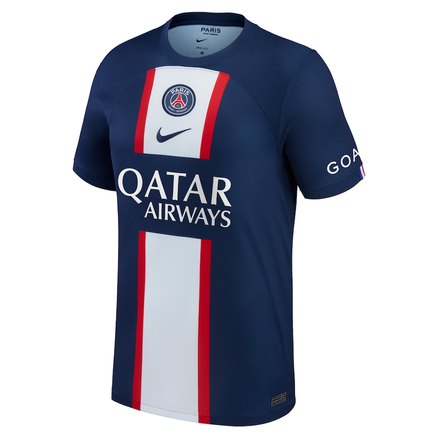
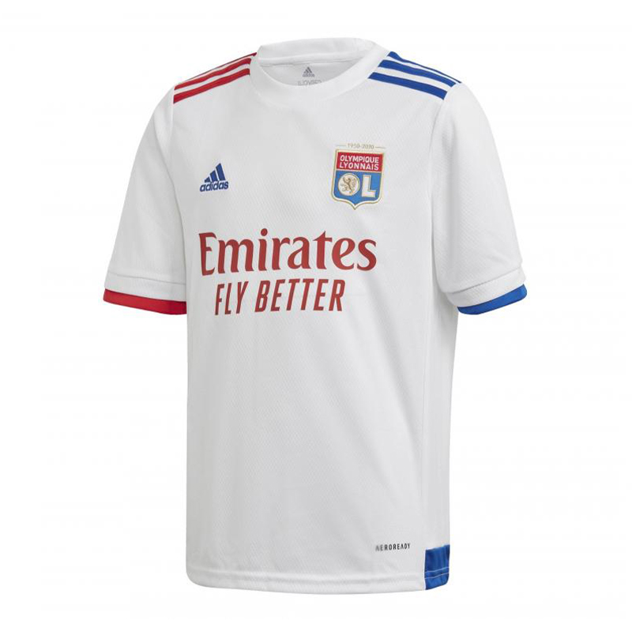
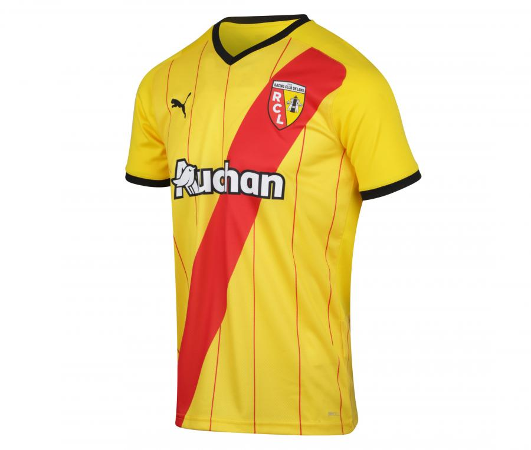

Le Championnat de France de football, appelé Ligue 1 est le championnat professionnel de football masculin de plus haut niveau de la Fédération française de football. Il regroupe les meilleurs clubs de France métropolitaine et de Monaco.
Messi, Neymar, Mbappe ... Le club de la capitale a su attirer de nombreuses stars, empares-toi de leur maillot! Le Paris Saint-Germain Football Club, couramment abrégé en Paris Saint-Germain FC, Paris Saint-Germain, Paris SG, ou PSG, est un club de football français, basé à Saint-Germain-en-Laye et à Paris. C'est la section football du Paris Saint-Germain omnisports.
L'Olympique lyonnais est un club de football français fondé en 1950 à Lyon. Le club, basé au Parc Olympique lyonnais à Décines-Charpieu, est présidé depuis juin 1987 par Jean-Michel Aulas. L'équipe masculine évolue depuis 1989 en Ligue 1 et est entraînée depuis octobre 2022 par Laurent Blanc.
L'ambiance la plus chaude de France ! Le Racing Club de Lens, couramment abrégé en RC Lens, est un club de football français basé à Lens, en France. Le club évolue à domicile au Stade Bollaert-Delelis, d'une capacité de 38 223 places. Fondé en 1906 sous le nom de Racing Club lensois, le club prend son nom actuel en 1969.
